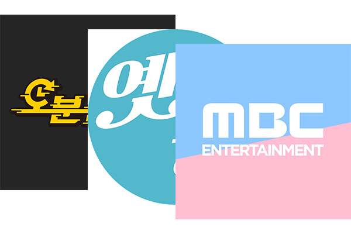
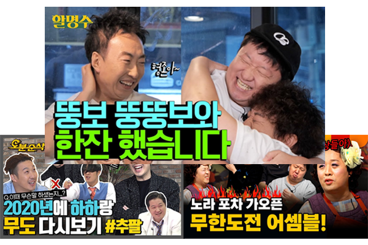
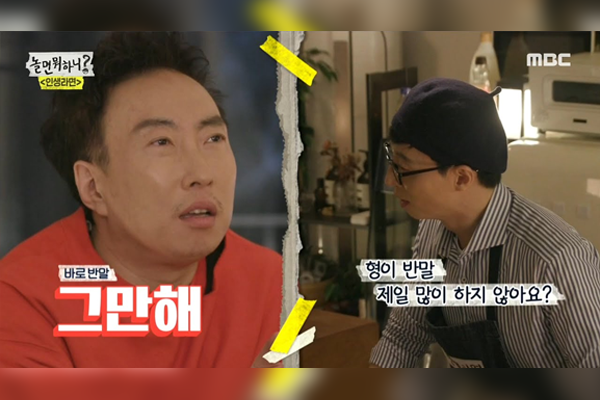
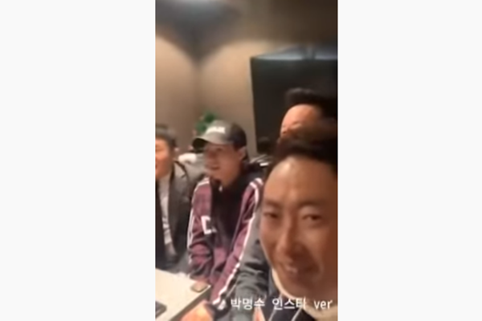

역사
멤버
가요제
추격전
무한상사
레전드 특집
종영 후
종영 후...

MBC의 여러 공식 유튜브 채널
(
MBC Entertainment
,
옛능
,
오분순삭
)
에서 전체영상과 편집영상들을 만날 수 있습니다. 오늘 소개해드린 특집들을 검색해서 즐겨주세요!

무한도전 멤버들 개인 유튜브 채널 등에서 서로 만나 콘텐츠를 촬영하였습니다. 많이 늙었지만 죽지 않는 시너지들을 구경하러 가보세요!

김태호 PD 연출에 유재석이 메인을 맡은 MBC 예능 프로그램 '놀면 뭐하니'에서 간간히 무한도전 멤버들의 케미를 볼 수 있습니다.

무한도전 종영 1주년 인스타 라이브를 하는 등 SNS로 간간히 소식을 전해왔습니다.